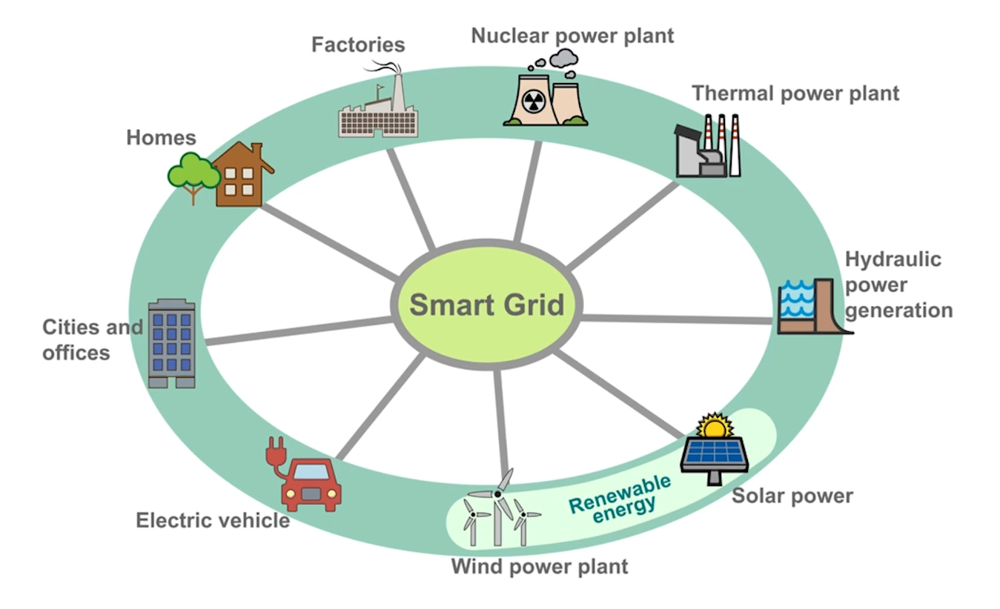
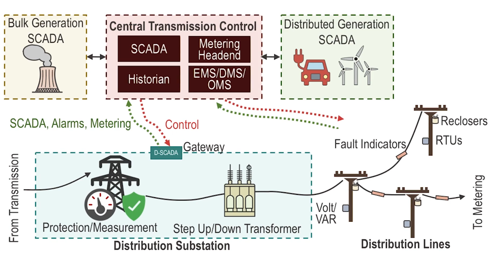
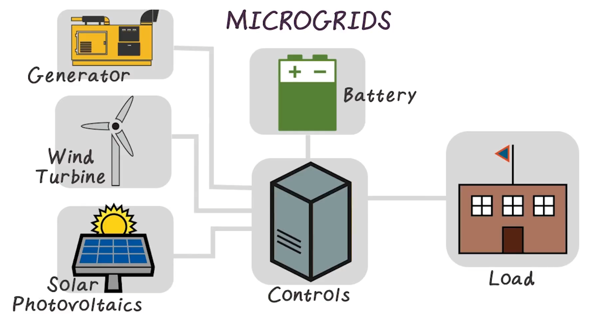
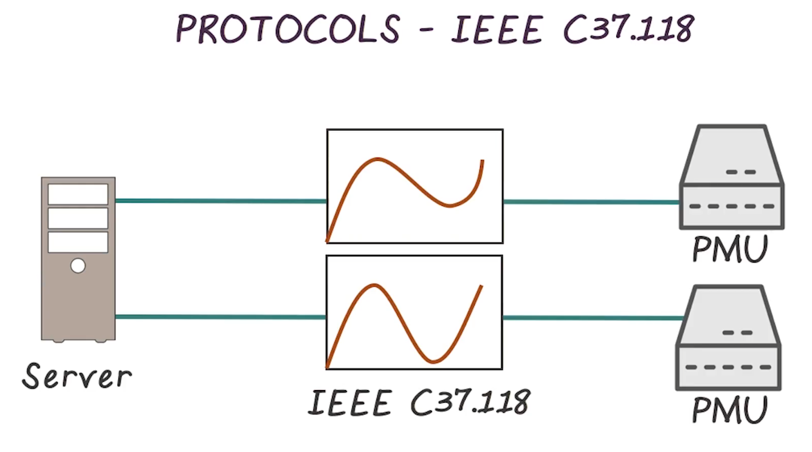

ICPSS Lecture Notes - Lesson 10 - Smart Grid
Smart Grid

- An extremely complex interconnection of multiple systems
- Objectives
- Increase grid resilience
- Improve environmental performance
- Deliver operational efficiencies
- Utilizes common, open, and specialized protcols
- Blend of open and proprietary networks
- Energy demand has increased due to growth in population, disposable income, and just general energy consumption (due likely to increased electronic usage in homes)
- Globally the population growth is the biggest factor
Grid Resilience
- Resilience: the capability ofa given entity to withstand from unexpected actions, and recover very quickly thereafter
- In the case of the electricity network, a Smart Grid should be able to withstand environmental threats (both intentional or unintentional), and recove in a timely fashion
- One of the biggest threats to resilience is peak load demands
- Other threats include old equipment and cyber attacks
Peak Load Demands
- Multiple kinds of units
- baseload, intermediate, and peak.
- Vary primarily in ability to meet constant vs bursty load demands.
- Cost to operate increases from baseload->intermediate->peak
- peak load units are designed to spin up, meet bursts of demand, and then shut back down
Effects of Cyber Attack
- The grid today is very much centralized
- Psychological impact of power outages in modern times is severe. Can lead to “feelings of sheer terror”
- Secondary effects
- Loss of communications
- Financial impact
- Simulation exercise conducted in June 2010
- goal: assess the strategic and economic impact of a major energy supply disruption caused by coordinated terrorist attacks on key nodes in the global energy infrastructure
- Findings: financial implications are severe. petroleum prices spiked, and stayed high. gas prices did too. GDP losses were massive, > $300b per year. Unemployment grew.
Environmental Performance
- Improving efficiency of the US power grid reduces CO2 emissions
- How can the smart grid help?
- Greater efficiency.
- Less consumption (lower growth) means fewer emissions
- Integration of renewable technologies
- These have much lower emissions. The Smart Grid allows more of them to be used, displacing older petrochemical energy sources.
- Reduction in the need for new power plants.
- Building more power plants addresses only short term needs, and the financial and environmental costs are steep.
- Support for electric vehicles
- Provisioning of charging infrastructure.
- Charging usually done during off-peak hours, mitigates the need for use of costly peak load devices
- Mitigates use of gas by traditional ICE cars
- There is some debate on this, but smart money says this is still a net win
- Smarter appliances
- Smart devices can detect power fluctuations and reduce their consumption to help prevent emergencies
- These appliances can run at low price periods (off peak) to also reduce cost
- Greater efficiency.
Operational Efficiencies
- Consider current power bill.
- Almost half is cost associated with the transmission and network distribution. Rising costs are passed to the consumer
- The cost for maintaining aging infrastructure only increases, this means higher bills
- Overall benefit of Smart Grid in this context, according to one analysis, is >$2b over 15 years. Over half to consumer.
- Scheduling devices to run at off-peak times reduces cost, both to consumer and to the system in general
- Another benefit is line loss reduction
- About 7% line loss in US
- Approximately 300b kWh of power from transmission and distribution line loss
- Asset management
- reduce costs of poor asset inventory or management
Components of the Smart Grid
- Substation Automation
- Growing trend of automation to facilitate more efficient use of substations
- Synchronized Phasor Measurement (PMUs)
- measure voltage and current, and are placed across various locations across the grid
- By providing this information at short intervals, you can get a very accurate status of the grid
- Advanced Metering Infrastructure (AMI)
- the use of systems that are able to automatically send relevant metering information to appropriate stakeholders
- involves a device at the customer’s home, using some networking to send information back
- reduces need for manual meter readings
Social Pitfalls of the Smart Grid
- Certain communities may not have the opportunity to leverage its advantages, potentially leading to energy poverty
- Communities based at home all day, thus unable to take advantage of off-peak pricing
- Individuals unable to grasp the information overload presented to them
- Individuals who can’t afford smart appliances, which are more expensive
- Renters whose landlord don’t embrace smart devices
Smart Grid Network Architecture
- This section given as high-level talk, that boils down to giving edge nodes more agency, to communicate state back to central management. Briefly mentions the increased attack surface that represents.
- Mentions concept of microgrids, where the distance between generation and in-home usage is much smaller
Bulk Distribution Generation Architectures
- Also high-level. Acknowledges things like small solar adding architectural complexity.
- Automation has been in place for many years at this component. The challenges here are more about securing legacy infrastructure than securing new builds
Types of Electrical Generation
- Electric generation sources include several distinct mechanisms, built around the specific fuel used to create electricity
- Each system represents its own vulnerabilities that are inherent in their designs
- Goes through very high-level common-sense talks about how multiple forms of energy generation is done. E.g. solar vs hydro-electric vs combustion
- Follows up with in-depth dive of a combustion system, with the various actuators, sensors, controllers, etc. Not transcribed here.
Transmission and Distribution Targets

- Architecturally similar, but transmission occurs at high voltages, whereas distribution systems step down the voltage.
- Voltages get stepped up for efficient transmission, then stepped back down
- Transmission begins where generation ends, and differs from generation architecture.
- Transmission systems are physically accessible, while generation generally is not
- More remote substations also have some amount of physical access risk
- Transmission requires WAN to support measurement of the infrastructure, and SCADA system for operations
- Voltage step-up usually done at generation, but may be done during transmission as needed
- SCADA == Supervisory control and data acquisition
- G-SCADA == Generation SCADA
- T-SCADA == Transmission SCADA
- D-SCADA == Distribution SCADA
Substation Gateway
- Direct manipulation
- Indirect manipulation
- Remote manipulation
- Many kinds listed off, but not much context presented
Phasor measurement units (PMU)
- aka Synchrophasor
- Electricity flows from high to low voltage, and from high to low “phase angles”
- Not sure what “phase angles” are. Not explained
- To effectively transmit energy, must know the voltage and phase angle at key points. PMU does this
- Measure up to 30 times per second according to standard
- Remote access added to PMUs increase attack surface
- Usually run on Windows, so share attack effort with all other members of that platform
Line Protection and Monitoring Systems
- Combine metering and measurement with protection mechanisms
- Consists of breakers or line monitoring systems with automation
- Think of these as similar to a home circuit breaker
- Prevent undercurrent and overcurrent conditions
- Measurement functions overlap with PMU, and so often combine or integrate with those
- Detection of aberrant conditions might indicate equipment failure. Monitoring helps with preventative or quick maintenance and repair
- Often built atop commercial operating systems, and so share attack vectors with the rest of the platform
Transformers
- Transfers electricity from one coil to another via inductive coupling, stepping up or down the current by varying the delta between the coils
- Step-up transformers are necessary for electric transmission. Increase voltages to levels where power can be transmitted efficiently over long distances. Located at ingress of transmission
- Step-down transformers are used for consumption by the end user. Decrease voltages to levels that consumer devices and wiring can withstand. Located at egress of transmission
- Some transformers can do both, often useful at substations
- Rely on external control from portection systems and T-SCADA systems
- Tend to have a much smaller attack surface than other components of the transmission system. No controller or SCADA functions, no web-based consoles, etc.
- Manipulation could cause significant short-term or long-term damage
Distribution SCADA / DMS
- Responsible for the control of distribution operations
- Often controlled by DSCADA devices within a substation
- Have coummunication, data aggregation, and control plane functions.
- Also metering, and transformer monitoring and control
- In short, D-SCADA systems are often feature rich
- Support lots of protocols and so have massive attack surface
- Due to heavy interconnectivity at this point, compromise here can have sever consequences
Field Controllers and Automated Field Devices
- A field controller is a remote terminal unit (RTU) used throughout the distribution system, outside of the substation
- Many commercially available RTUs have a proliferation of interfaces, protocols, ports, and services that give substation gateways such a broad attack surface
- Examining commercially available volt/VAR systems, reclosers, feeders, and other field devices, there are far fewer communication vectors, and so narrower attack surface
- If compromised, consequences range from inefficiencies in operations, to inaccuracies in reported data, to outages
- For example, auto-reclosers are designed to protect against power surges and to recover once conditions are normal
- Manipulation of line conditions could cause a recloser to trip unnecessarily, results cascading throughout the distribution system
- Complete compromise of an RTU could allow a cyber attacker to insert malicious logic into the controller
- For example, auto-reclosers are designed to protect against power surges and to recover once conditions are normal
Metering and Advanced Metering Infrastructure (AMI)
- We’ve made it to the home or business
- Consists of meters that report to a headend system
- When hacking analog meters by manipulating the magnetic resistance that controlled the analog meter dials, the result of such an attack was isolated to the source and fairly easy to detect.
- More modern meters provide contact-free reading
- Smart grids add considerable sophistication to metering. Smart meters can measure energy utilization and be remotely connected/disconnected
- AMI is used by many industries, including energy, water, and gas
- AMI Architecture consists of three primary components
- Smart meters
- A digital meter consisting of a few key elements
- A solid-state meter for real-time data collection
- A microprocessor and local memory to store and transmit digital meter measurements
- A communication network often including a home network connection for home automation and other advanced in-home services
- Thus, there’s enough computer here to compromise.
- Many smart meters have common features and capabilities mostly around network connectivity and manageability including various communication ports and protocols.
- Diagnostic ports may be short-range IR
- Remote management and configuration are often provided via a dedicated software system
- These systems are typically software based, and installed on a utility-owned computing platform with a standard OS
- A digital meter consisting of a few key elements
- Communication network
- AMI server or headend
- Consist of server and database
- Typically software-based, utilizing utility-owned Windows systems
- Lots of attack surface here, between commercial DB software and normal Windows vulns
- Smart meters
- Compromise of smart meter and AMI
- Physical access is often available, so lots of attack surface here, starting with just simple DOS.
In-home systems
- Lots of variety in what this is made up of
- We won’t go in-depth on the systems downstream of the meter, but must acknowledge these exist and present risk
- Home Area Networks (HANs)
- Home Energy Management Systems (HEMS)
- Smart Appliances and In-home devices (IHDs)
- Private generation
- Such as wind or solar
Microgrids

- Integrated energy systems, typically used by campuses or communities, or military locations
- May operate in parallel with the public grids, or run in isolation
- Just a small-scale version of the traditional power grid
- However, usually deployed for a specific purpose
Protocols - IEE C37.118

- Specific to power grid
- Covers phasor measurements, specifically the synchronization thereof
- Accomplished by tagging each measurement with an absolute timestamp